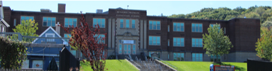
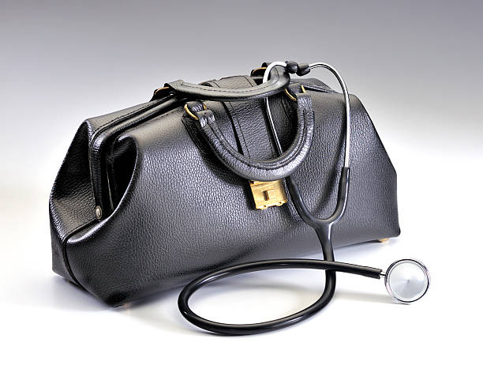
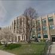
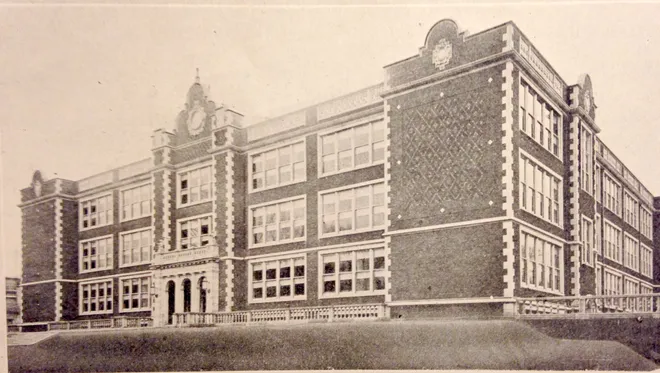

CAMPBELLs, LUGGs, & BLACKWELLs of Nelson, PA
Bill Thompson's Memoir
Chapter 2 - My Education (& Training)
1st Grade: "All I want is a bookcase.”
I think my first year of school is different enough from most of my readers' experience, to merit discussing in some detail.
But first, I'd like to draw a distinction between the words education and training. There is some overlap between the two. Education always involves some degree of training and training always involves some degree of education, but the goals are different.
OK. Back to first grade. As you know, my mother was the teacher. Sometimes that was a problem because she had to bend over backward not to show any favoritism. But the big differences were in its country setting -- and in having multiple grades sharing the same room, same teacher, and the different grades activities occurring simultaneously. Which worked out much better than you might think.
The site faced the busy road [NY 7], but was set well back and
had no fencing that I recall. It probably had been abandoned
farmland. In front was a large, lawn, but to the sides and behind,
farm fields had turned to meadows which were now acquiring patches
of shrubs, such as staghorn sumac. Sometimes pairs or small groups of
kindergartners utilized those thickets to conduct their own
independent studies of comparative anatomy. Behind the school, the
land gently sloped down to a creek, which was on the other side of
a high embankment, topped by raised railroad tracks -- the maim
line of the Delaware, Lackawanna & Western RR. And an
underpass that once let farm equipment or livestock get to the
creek and beyond. In good weather on warm days, we had time on our
lunch recess to go to the creek. The creek had minnows and
crayfish & salamanders -- a kid's treasure trove of wildlife.
(And the fields and a hedgerow had red-winged blackbirds.) Who
today can imagine letting little kids wander around like that
unsupervised? My mother had a large handbell that she would ring
loudly to let us know recess was ending. If you were still down by the
creek when it rang, you had to run fast to get back in time. Or
else. Or-elses were serious. The principal had a paddle -- and
used it on occasion.
My mother had a stool in a rear corner of the room. If a student
was disruptive, she would grab them by an ear, twist it, and march
them to the stool where they would sit facing the corner for a
duration she felt appropriate.
Sometimes pairs or small groups of
kindergartners utilized those thickets to conduct their own
independent studies of comparative anatomy. Behind the school, the
land gently sloped down to a creek, which was on the other side of
a high embankment, topped by raised railroad tracks -- the maim
line of the Delaware, Lackawanna & Western RR. And an
underpass that once let farm equipment or livestock get to the
creek and beyond. In good weather on warm days, we had time on our
lunch recess to go to the creek. The creek had minnows and
crayfish & salamanders -- a kid's treasure trove of wildlife.
(And the fields and a hedgerow had red-winged blackbirds.) Who
today can imagine letting little kids wander around like that
unsupervised? My mother had a large handbell that she would ring
loudly to let us know recess was ending. If you were still down by the
creek when it rang, you had to run fast to get back in time. Or
else. Or-elses were serious. The principal had a paddle -- and
used it on occasion.
My mother had a stool in a rear corner of the room. If a student
was disruptive, she would grab them by an ear, twist it, and march
them to the stool where they would sit facing the corner for a
duration she felt appropriate.
As I mentioned in the "Before School" chapter, my mother taught K through 3rd grade in one room and it worked well. Usually, she would start the day -- after we pledged allegiance -- by quickly giving each grade an assignment they could do on their own, such as "Read pages x through z" of a school book, or copying sentences from the blackboard or whatever, and then work with one grade on their lesson. A common variation of that was to have an older grade help the next younger class with material that they had studied the previous year. That served two purposes. One, each of the younger kids had an individual tutor for that morning's (or afternoon's) lesson. And also, because teaching is one of the best ways of reinforcing what you have learned and forcing you to think about and hopefully better understand what you had learned the year before. It could get a little noisy -- especially when the kindergartners were playing their rhythm instruments.
December 1941. On the first Sunday of that month, I was playing in our sideyard. Across the side street, some older boys were playing, a couple of houses away. Suddenly they began shouting excitedly "We're at war. We're at war." I went into our house and asked my mother, "What's a war?"
As I told you in a previous chapter, I loved being read to and couldn’t wait until first grade to be able to read, so I persuaded my siblings into pointing to each word as they read it aloud as a way of circumventing my mother's forbidding them from teaching me to read. It didn't "spoil" first grade for me, I still had a lot to learn, such as how to “sound out" words, but I was reading pretty well.
This brings us to the title of this segment. By now you know that I loved books -- and still do.
For what turned out to be my last Christmas in Conklin, my parents asked what I wanted for Christmas. They now had money to spend, as for the previous year’s pedal-able airplane. But they were surprised when I answered “A bookcase.” They took that in stride pretty well, but were flummoxed [and I think disappointed] when they asked “What else” and I answered “Nothing else, just a bookcase."
On Christmas morning, I unwrapped a large, “From Santa” package that was under the tree. And stood there in obvious disappointment. When they asked “What’s wrong?” I said, “But I wanted a bookcase!” Their assurances that it WAS a bookcase were to no avail. Eventually, they thought to ask “What was it you wanted to do with a bookcase?” And I explained, “I wanted to carry books around.” They were able to decipher my desire and find a sturdy, kid-sized, cardboard briefcase. It was perfect! I could put half a dozen books in it, carry them out under a shade tree, and read to my heart’s content!
2nd Grade: "Orphans' Patches.”
Before starting second grade we moved back to Binghamton's south side. This time to a nice bungalow at 62 Tompkins St., between the river and Conklin St. I attended a large elementary school, several blocks away, this time with two separate room for each grade (one for those starting a grade in Sept. and one for those starting it in Jan.) I believe it was Benjamin Franklin, remember that it was near an orphanage, and that the orphans attended our school. They usually came to school in clothes that were clean, but had been mended or carefully patched. I was a very idealistic kid, convinced that the world should be fair. That was one of my big complaints about things -- "But it's not fair." Which is why I was horrified when our teacher would ridicule them in front of the whole class for their neatly mended and patched clothing. What kind of a person is so cruel as to do that to innocent children, for something they have no control of? Obviously someone with little or no empathy. And probably low self-esteem or they wouldn't need to put down others like that. Whatever the reason, such behavior is inexcusable for a teacher.
3rd Grade: "Aches & Pains.”
Third grade started the next fall, fortunately with a different teacher (most of my teachers were excellent or at least adequate). But I only attended for 3 weeks. Then I started having fever, fatigue, and intense pain in my ankles and knees. Dr. Weiss made a house call and diagnosed me as having rheumatic fever. The main treatment in those days was to rub methyl salicylate (synthetic oil of wintergreen) on the inflamed joints for temporary relief. (I still find the smell of wintergreen comforting.) Because rheumatic fever can injure the heart valves, he said I wasn't to get out of bed for four months and wasn't to sit up unaided. Someone was to lift me to a sitting position and prop me up with pillows. By the time that was over, my muscles had atrophied and forgotten how to walk. I had to build them back up and relearn walking.
I got to read a lot. And to have books read to me. In addition to those I've already mentioned, were Peter Church Mouse, Gabriel Church Kitten and Howard Pyle's The Story of King Arthur and His Knights and his The Merry Adventure of Robin Hood. If anyone sees me as a hopeless romantic, blame the latter two books. [It took me a long time to realize that jumping on a white charger to rescue a damsel in distress wasn't always wise or appropriate.] But even with all the reading, I often was bored and time hung heavy. So, my grandmother taught me to crochet and to do cross-stitch embroidery -- they helped dispel the tedium.
Scholastically, I lucked out on two counts. One, Binghamton used a semester system, so public school grades started in both September and January and you could graduate in either June of January. Therefore I was only held back half a year instead of a whole year. And two, that my mother was certified to teach grades K through 12. I wasn't cleared by the doctor to resume school in January, but my mother taught me at home. And by April or so, I was able to join my new class -- This time at Henry W. Longfellow Elementary School. But with restrictions. The doctor didn't allow me to run or participate in any strenuous activities. The third and fourth grades (each starting in January) went smoothly. I was a good student, who usually knew the answers, but didn't put my hand up often -- I didn't want to be seen as a "show off." Some of my doctor's restrictions were eased. But in fifth grade, I encountered a strict teacher. Normally that was no problem, I was a quiet, well-behaved kid. However, my extra reading got me in trouble. One day the teacher was giving us a lesson from the textbook when I put up my hand. "Yes, Billy." To which I replied, "Excuse me Mrs. White, but the textbook is wrong. It says ..., but really ...." Wrong thing to say to her in front of the class. I was on thin ice the rest of that year.
6th Grade: "More Aches & Pains.”
Sixth grade started out fine in January, under a well-liked teacher, Mrs. McCormick. But then a recurrence of the rheumatic fever, not as bad, but I was out for months. Not confined to bed very long. Now I was under the care of a cardiology practice. But a fairly long convalescence. This time instead of filling my time with crocheting and cross-stitching, I went for walks with the family dog, a pointer. A boy couldn't ask for a better companion. We did a lot of exploring. And a lot of communing with favorite trees. There was a grand white oak and soft, moss carpet below; a large, magnificent ash, plus my favorite, a tall, gnarled old hemlock that had a great spot to sit at its base, among the roots, leaning back looking up at its curved trunk and at a neighboring bee tree, with industrious workers constantly coming and going all day. I had been with my classmates for three-plus years now, so, even though my close friends were mostly neighbors, not classmates, I was sorry to be left behind.
But my new sixth-grade class -- now starting in September, made up for that. We had a great teacher, Mr. Ulysses S. Avery. And a good set of classmates, some of whom were with me for the next eleven years -- all through college. I was a smart kid and a good student in most subjects (let's not talk about spelling and penmanship), but not chosen for the school's gifted program. Speaking of not being chosen, because of my years of restricted activities I wasn't very good at sports, and even though the tallest, I was invariably one of the last chosen when teams formed on the playground. I also was a skinny kid, which I guess made me look less formidable than I thought. One day I saw a short, stocky, tough guy classmate picking on a much younger kid. I bravely said "Stop that. Leave him alone." "Oh yeah, who's going to make me?" "I am." At which point he sucker punched me in the stomach, knocked my wind out, and walked off, leaving me on the ground, gasping for air. Being a knight in shining armor takes more than just good intentions. That summer, I bid a fond farewell to PS 13 and found myself in three years of hell in West Jr. H. S. Fortunately my three years of high school made up for that.
Junior High: "Nightmare.”
I literally had nightmares about it for years. For one thing, the junior high school seemed humongous. And very institutionalized. The decor was drab and felt more like what I imagined a prison was like than a school. The long, drab hallways were crowded when we changed classes -- noisy and sometimes rowdy. The boys' gym teachers were macho jocks - wanna-be drill sergeants. They had no use for sissy wimps who presented doctors' notes saying, "Please excuse William from ___ activity." Our class schedules seemed complex, differing from day to day as to where you were supposed to be when. Just figuring out WHERE everything was presented a big problem at first. Backpacks or book bags weren't common then and just juggling our big pile of books was a challenge. As sometimes getting from one corner on the top floor to an opposite corner on the bottom floor in the allotted time was difficult. For the most part, the teachers were OK, but the 7th and 8th-grade guidance counselor was great. For me, he was the school's saving grace. I made one lifelong friend there, Nelson Theodore "Ted" Sommers, now deceased.
I dreaded the start of each semester. My three older siblings had all gone there and were well-regarded by the teachers, many of whom still remembered them, despite our age differences. On the first day of class, we would introduce ourselves, seat by seat. Or sometimes the teacher would call the roll. Of course, they had a list of the students' names.
I'm not sure why it bothered me, but often, before I had a chance to say a word, the teacher would take one look at me and say "You must be a Thompson." Perhaps I wanted to stand on my own merits, rather than being "one of them" -- even if it was a favorable "them."
The worst part of the day was riding to and from the junior high on the bus. We walked to the elementary school and took the bus from there. The school district didn't have its own fleet of school buses - they chartered buses from the local public transit company, with their regular drivers, but making one special run each morning and afternoon. The drivers didn't like having a busload of noisy kids, so they ignored us as much as possible. And thus the bullies had a field day. If a fight broke out the driver would stop and throw the offenders off the bus, but that was the extent of their involvement.
One year, I think I was in 9th grade. I was in a sledding accident. I completely severed all the tendons in my left wrist and would have lost the use of them had I not gotten to surgery before the tendons retracted. They were stitched back together and in time were fine. But the severed nerves took a long time to heal and were very painful if someone squeezed that area. A situation I did my best to keep secret from the bullies, but somehow one figured it out, and I was their target for the rest of that term, fortunately, my last there.
Everyone had pretty much the same classes in the 7th and 8th grades. Except that boys had wood shop in 7th and electric shop in 8th. Wood shop was tolerable but rather boring, I already knew how to use the hand tools. Electric shop was better, I learned things I've found useful ever after, such as how to rewire lamps. Girls had home economics.
But in 9th grade we had electives. I took Latin which I liked. So many of English's word roots are from Latin. And we all liked the teacher, Mr. Porter. Instead of the regular English class, I took journalism and it helped make me a better writer. "Who, what, where, when, and how." Being in the class automatically put you on the staff of the school newspaper. Ironically I found myself the Boys' Sports Editor. Somewhat ironic, because few knew less about sports than I did. I got the position by default -- I was the only boy.
Finally, the ordeal was over. I graduated and bade a not-so-fond farewell to those long, drab, halls.
High School: Metamorphasis from the Chrysalis
Before our graduation, at some assembly in the waning days of ninth grade, we were addressed by the high school band's director, Bernard Shiffrin. He told us that the band needed new members. Experience wasn't required, they would teach us. And that we could stop by the HS band room the next week and borrow an instrument for the year. I did that and ended up with a Scotch Bass and its marching harness. I walked home the three miles or so, every so often giving it a whack in various places and with different degrees of force to see how the sound changed. When my father, who didn't like noise, got home he was not pleased.
There were a few practice sessions in the band room that summer. The bass drum was considered easy to play, so after a few sessions, I agreed to let someone they apparently thought had even less aptitude than I did take it. I needed to exercise my left hand and fingers to fully regain their use after the tendons were severed and repaired. I watched the snare drummers do a warm-up exercise where they took one end of a drumstick in each hand and did a rapid twisting of their wrists, reversed it, rapidly twisting and reversing it. [Watch "Pretzel video." It may have been teenage male folly, but we could do those, one after the other, so fast that our hands were a blur.] That looked like good therapy, so I decided to switch to the snare drum instead. My father was pleased because now the bass drum was gone and instead I had a rubber pad to practice on with my drumsticks. Much less noise.
I thrived in high school. [Here's a 1920 photo of BCHS. The school was old, but somehow cozy.] There was much more freedom and less regimentation. I still ran into the first day "You must be a Thompson" bit at the beginning of semesters, but by now it didn't bother me. And I had a number of excellent, nurturing teachers. I listened closely during classes and remembered pretty well, so I did little note-taking. Most homework assignments I could do quickly. I worked hard for teachers and subjects I liked, and did enough to "get by" for those that I didn't like.
Everyone in the concert band or the marching band (I was in both) loved the band director, Bernie Schifrin. He gave me a few lessons on how to play the drum, but he didn't have time to give many lessons. Playing the drums seemed to be good therapy for recovering the use of my severed tendons, so my parents decided to pay for my taking weekly private lessons from Russ Black, the area's premier dance band drummer.
One remarkable teacher that I co-existed OK with, but didn't relate to was my second-year Latin teacher. She was a strict disciplinarian and many of the students felt she was great because "she makes you learn." But I wasn't built that way. However, she was remarkable. Not because she only seemed to have three dresses, which she wore in rotation, one week at a time -- but because she had memorized the text. She would sit at her desk, with the textbook in front of her, but closed, and call on a student -- "James, please translate for us, starting at page 24, the third paragraph." So the student would start reading the Latin to himself and telling us his English translation. If he made a mistake, she would interrupt (still with the book closed) and say "Please take another look at the third word in the fifth sentence (or whatever)." And when the student had finished, she would either say something like "Very good, thank you." Or, something like "You can do better than that. Please do your homework assignments!" That year we were using a textbook version of Caesar's De Bello Gallico, so usually when I hear or read the name Julius Caesar, I think of her in her favorite black dress with the pink flowers printed on it.
The school was old, but felt comfortable for me. It adjoined "downtown Binghamton." It had no cafeteria or lunch room, so we had a longer lunch hour and were allowed to go to the lunch counters and restaurants for lunch. My favorite was to go to Woolworths and get a cup of tomato soup and a grilled cheese sandwich. Or a hot dog. Often I brought a "brown bag" lunch and ate it in one of the small stairwells leading to the auditorium's balcony.
At that time Binghamton had two high schools, I went to the older one Binghamton Central, which served the city's South and West sides. The other high school, North High, served the city's North and East sides. But there was also a difference in orientation. BCHS was academically oriented, and many East-siders who were college-bound transferred there. Whereas North High had a technical orientation, and students inclined toward an engineering career, transferred to North. At that time German was considered "the language of science" so that was the foreign language of choice for those technically oriented. Students at BCHS were more likely to opt for French or Spanish.
Central High also contained a vocational school program. The bottom floor (a semi-basement) housed auto mechanic courses for boys and beauty culture courses for girls. The kids in the academic program looked down on the "Voc-ies" as stupid. I suspect the kids steered into that program were disproportionately of Italian or Eastern European ancestry -- the latter stereotyped as "dumb Polacks."
There were general requirements of so much math, so much "English," etc., but opportunities for electives. I was on a "self-improvement" kick, determined to overcome my shyness, so I took a public speaking class and a year of dramatics as part of my "English" requirements. I enjoyed math, especially plane geometry, so I took lots of those courses. I took biology in 9th grade, but I needed another year of science, so I took physics and loved it. We had a great teacher. But my favorite subject was history. By 12th grade, my shyness had abated to the degree that I discovered girls. (In preparation for that, I took lessons in ballroom dancing at a dance school.) And that girls weren't just pains in the butt who made you drink imaginary tea out of toy cups. But that part of the story falls into my chapter titled "Romance."
My favorite teacher of all was my 12th-grade history teacher, Helen O'Brien. But I became very angry with her. In New York state we had at that time a choice between getting a "Regents' diploma" or a "school diploma" when we graduated. To get the latter, you not only had to meet various course requirements (as mentioned above) but also to take statewide tests of your knowledge in those subjects -- tests approved by the NYS Board of Regents, which was in charge of education. After I took my history Regents' exam and she'd marked it, Miss O'Brien took me aside and explained "You had a perfect paper and scored 100. But I couldn't turn it in that way. They don't accept 100s in history tests. I marked you down to 95, but that was doing you a favor. If I had turned it in as a 100, they would have marked it down more, to a 93 or less." I still expected the world to be fair, so I was very upset by the injustice.
Few moments in my life have exceeded the recognition I got at my high school graduation. I had a gold tassel on my cap, to signify an honor student. And I was on stage a lot. Playing drums as part of the school band and again as part of the orchestra. On stage again in a non-speaking part as "the ragpicker" in a scene from the school's production of The Mad Woman of Chaillot. And up at least 3 times to receive awards. One was for an undeserved one for having overcome the greatest physical handicap. I was called to the stage for a second reward, I don't recall what for. And, I'm sure thanks to Miss O'Brien, called to the stage again, to receive the DAR award for best history student, which included a book on the American Revolution. And, of course, I was called up once more to receive my diploma.
College: "Let each become all that he is capable of being.”
I had always assumed that I would go to college. As I suspect, did most of my teachers. But where and what to study?
I had long abandoned my earliest aspirations -- becoming a cowboy, fireman or steam shovel operator. But what?
As a teenager, my first answer would have been "archeologist." By thirteen I had read every book in our public library on archeology about the Mayas. And many on the archeology of other places and times.
My mother had a lot of confidence in the wisdom of a somewhat frequent house guest, a distant cousin, the Rev. Canon Edward Claude Essex, of Cambridge U. So she urged me to consult with him on career advice. He strongly encouraged me to forget the idea of a career in archeology -- "It's a rich man's game." I expect that was good advice -- for the England of his time and the Cambridge - Oxford milieu he lived in. But one of my college classmates and friend, Phil Hobler, went on to a successful career in it and became department chair at Simon Fraser U. in Vancouver. He didn't have an easy time getting established in that field but persisted. Arguably if I had had an equal passion for the field I wouldn't have let someone talk me out of it so easily.
Another possibility was forestry. My brother Hank attended Syracuse U. for a couple of years. The State University of New York's College of Forestry is located on the Syracuse U. campus. So, he taught me their song (sung to the tune of "There's a Tavern in the Town"):
I said I'd go to Syracuse, Syracuse
And when they asked me what's the use, what's the use
I said "Just wait four years and you will see, when I have studied forestry, forestry.
"I'll learn the name of fish and bugs, fish and bugs
"Of birds and butterflies and slugs, flies and slugs.
And the names of trees will never bother me
When I have studied forestry, forestry.
"Silviculture I will master, I will put out fires faster
"and learn to use the compass and the calipers.
Etc.
That had a lot of appeal for me.
I got a good score on the SATs - not phenomenal, but good enough to earn me a "Regents' Scholarship. It was only $200/semester, which sounds paltry now, but at that time was the cost of the tuition at any S.U.N.Y campus. Soon after, I got letters from Le Moyne College, a well-regarded Catholic school near Syracuse, and one from Cornell U. in Ithaca, NY. They were offering an additional scholarship to winners of Regent Scholarships, making up the difference between their tuition and SUNY's. I now had full tuition to two more colleges. Le Moyne had a lot of rules I wasn't comfortable with -- e.g. I think at that time all students were expected to attend mass daily, which as a Protestant didn't appeal -- going to church once a week seemed often enough.
Cornell was very tempting, a wonderful opportunity. And so was the state forestry college. But we had no college fund built up, and federal student grant or loan programs didn't yet exist, so the colleges' fees and room and board seemed unattainable, so I settled for the local SUNY campus, Harpur College. I could reach it via local buses. It turned out to be a good choice for me.
The passage of the G.I. Bill at the end of WW2 created a big demand for increased capacity. Many colleges expanded and new ones sprang up. To meet the demand, Syracuse U. opened an extension branch, Triple Cities College, in Binghamton. My eldest brother, Tom, graduated from there. But SUNY wanted to expand, so they purchased Triple Cities College, renamed it Harpur, and moved it to a temporary campus in Endicott, NY while searching for a permanent site. One lovely old home was purchased and became "Colonial Hall"

Liberal Arts were ideal for me. The intent was to produce well-rounded people, with the basic knowledge of many areas, and, as mentioned previously, the skills in learning, research and communication to be able to specialize in a wide variety of fields. I didn't enter college with any clear cut-carer path in mind. But, as history seemed to be my best subject I expected to major in history. Ironically, however, as things turned out, I took many history courses -- art history, music history, the history of French literature, the history of philosophy, etc. Somehow I ended up never having taken a single course from the actual History Department. Not surprisingly in light of that, I was not a history major.
On Freshman registration day, I tried to enroll in History 101. But the lines were long and the class sizes small, so by the time I presented my requests, every section of History 101 was filled. Nothing that was left seemed particularly appealing, so, almost randomly, I ended up taking Philosophy 101, Introduction to Philosophy, instead.
The teacher, Jack Kaminsky, was charismatic, a natural showman, but was not all sizzle -- there was plenty of steak. His specialty was symbolic logic, but he had a far-ranging mind. He asked questions that were far ahead of 1954. The first organ transplant was performed that year, but he had the class discuss "At what point would you stop being you?" We were asked to assume that someday organ transplants, joint replacements, etc. would be common. If each part was replaced, one by one, would you still be you? And what if someone's memories could someday be uploaded into a computer, would that still be them? All sorts of advanced ideas. It was then being discovered that important processing was done by nerve cells in our viscera. That having a "gut feel" might be more than just an expression. And possibly by other nerves, not in our brain. Where then was our "mind?" Was the mind just electrical activity in the brain, or were other parts of our nervous system incorporated into our mind? He brought up areas still not well understood about plant communication and plant behavior. I wished I had the requisite background to make serious studies of plant psychology.
I had planned on taking History 101 the next semester. But it was a small school, with a small faculty, so it wouldn't be offered until the next fall. I don't remember the details, but my attempt to enroll in it then came to naught. Going two years without a course from that department, made majoring in history unlikely. But I enjoyed the courses I was taking in algebra and geometry, so becoming a math major seemed a good choice. And math was a good background for all sorts of stuff. In the meantime, I chugged away at meeting the requirements of getting so many credits in this department and that many credits in another department, and without consciously realizing it, was taking many, many "History of ..." courses from various departments.
I made many lifelong friendships there. Unfortunately, only a few of those friends are still alive. But those were good years and I was very active in extracurricular activities. I became president of a service fraternity of ex boy scouts. We provided guides for families wanting to take campus tours, ushers for events, proctors for tests, etc. The school didn't have a real orchestra or band, but in my first year there I played in the pep band, making noise at basketball games. (But that wasn't very interesting or challenging.) I was an avid backpacker, canoeist, etc. but didn't have a car, so I organized the Harpur Outing Club to get the school to provide transportation and became its president. And I became editor of the college literary magazine. And participated in Math Club and French Club.
Things kind of chugged along from semester to semester. Mostly meeting the school's demanding, but general requirements of x number of credits in a foreign language, y credits in science, z credits in math, etc. I selected courses guided by which professors I wanted to study under. And what courses sounded interesting. There wasn't a separate dining room for faculty, and I sometimes shared a snack bar table with one or more of the faculty. Or, I couldn't help but hear their conversations at an adjacent table.
I found myself taking a philosophy course most of the time, especially from my favorite in the department, Richard Burgener, an epistomologist and all-around great guy. One of those courses was from Jack Kaminsky, this time in his field, symbolic logic.
In our junior year, we were supposed to declare a major. I chose math. We had to write a senior paper in our major. I was studying Boolean algebra, under an algebraist, and planning to write my senior paper in that field. But, as my junior year ended he left. And he was the only algebraist on the faculty. All who were left were in the field of "analysis" -- calculus or topology.
What to do? I didn't want to work under any of the other math professors, none of them were really interested in algebra. But Boolean algebra and symbolic logic were closely related. So, counting up my philosophy credits and finding I had enough, I changed my major to philosophy. In talking with a dean in order to make the switch, I was surprised that the courses I took from the French department on "The Age of Voltaire", History of French Lit, etc. added up to a minor. So I was now a Philo major with minors in math and French.
I worked hard at learning what I wanted to learn. I worked the hardest on a course we didn't get credit for. I signed up for a philosophy seminar on a topic that we didn't get credit for. Too few students signed up for it, so the school canceled it. Those of us who had signed up for it talked the prof into giving it anyway. It was a seminar, so the students did most of the work. He agreed to hold it, but only if we promised to keep up with our assignments. I worked the hardest ever on that course that "didn't count." But I was pursuing knowledge, not glory.
I was also pursuing girls, which didn't help my grades, and which gradually declined in my sophomore and junior years, to the point where I got a notice from the dean that I was in danger of flunking out. I buckled down for my senior year and brought them up enough to graduate.
Unfortunately, I turned my senior thesis in late, and even though my eventual grade was fine, it came too late for me to participate in that June's commencement. They just mailed me my degree.
After College: "Brownian Motion?”
I graduated in the middle of a recession. I had achieved my goal of gaining a broad range of knowledge. But not surprisingly, there was no demand for people with a BA in "Humanities." And no job ads that read "Inexperienced philosopher wanted." I had always expected that my career prep would come in grad school, but I had no savings, little prospect of getting a large enough scholarship, and my father was almost retirement age. The best job offer I got was for $20/week, which even back then was a pittance. When I interviewed with a company I'd had a summer job with, the interviewer said "You've got a lot of math courses, and, if you take a course in statistics, I think we'll have a place for you." So, that fall I took a statistics course at Harpur and took some part-time jobs, including substitute teaching. At the end of the semester, they hired me in a full-time job and sent me to a whole bunch of classes at a nearby IBM education center, and trained me in data processing, and managing it. It was good training and I enjoyed it. A couple of years later, they found themselves in financial trouble, so I reapplied with the guy who advised me to take statistics. They hired me and sent me to another bunch of IBM classes on programming and frequently sent me to conferences and seminars. They knew that was key to making me happy.
Meanwhile, Harpur College had morphed into SUNY Binghamton (later
Binghamton U.), and had opened some grad schools, one of them
being the Thomas
J. Watson College of Engineering and Applied Science.) I took a couple of math courses
and a computer science class there at night. After a few years, I
decided I was ready for more grad school, and applied to Lehigh
U.'s Information
Science program (an interdisciplinary program, which
happened to be under the wing of their philosophy department.) My employer had a division near Lehigh U.,
so I took a leave of absence from my Binghamton job and took a
temporary transfer to that division. I attended Lehigh for two
years and almost finished, but my Binghamton job needed to
retrieve me or replace me. I had a wonderful boss, so I went back,
hoping to finish my degree remotely. But the time demands of work
prevented that. Nevertheless, I learned a lot and didn't feel the
time and effort were wasted.
I took a couple of math courses
and a computer science class there at night. After a few years, I
decided I was ready for more grad school, and applied to Lehigh
U.'s Information
Science program (an interdisciplinary program, which
happened to be under the wing of their philosophy department.) My employer had a division near Lehigh U.,
so I took a leave of absence from my Binghamton job and took a
temporary transfer to that division. I attended Lehigh for two
years and almost finished, but my Binghamton job needed to
retrieve me or replace me. I had a wonderful boss, so I went back,
hoping to finish my degree remotely. But the time demands of work
prevented that. Nevertheless, I learned a lot and didn't feel the
time and effort were wasted.
After returning to working full time I worked at a variety of jobs. I continued learning by attending conferences, seminars, taking courses and teaching courses.
Now that I'm retired, I have time to take courses and am enjoying the non-credit offerings of the Lehigh Valley Institute for Learning in Retirement in conjunction with Cedar Crest College in Allentown, PA. Currently, I'm enjoying a course on major ideas in biology.
And my family history website and blog constantly involve me in learning more about HTML, CSS, JavaScript, web page design, web design friendly to the visually challenged, etc. The web environment is continually changing and there are always new things to learn.
By now you can see that I truly view education as a lifelong process and still love learning.
Ending this chapter in the spirit of Uncle Wiggily stories:
Now if the cereal box doesn't run off with the punch bowl, I’m next going to tell you about romance in my life.